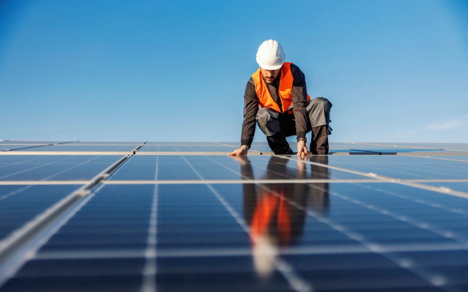
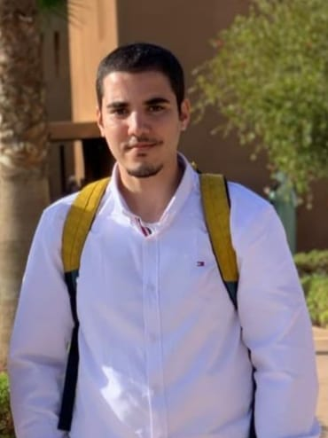
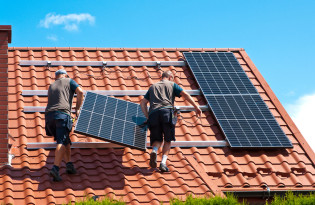
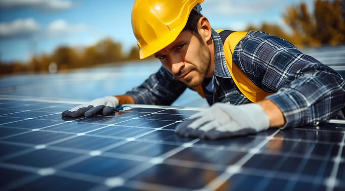
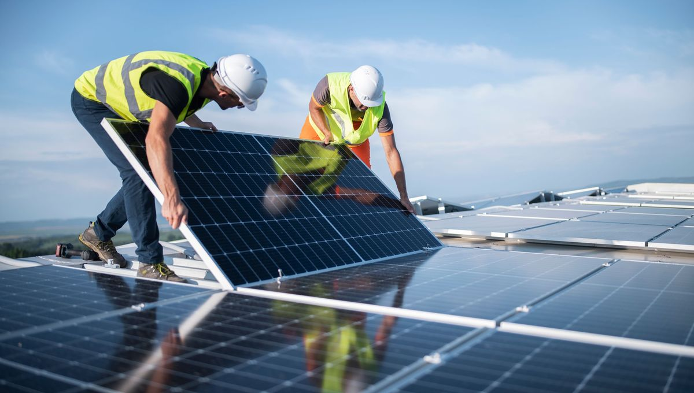

Chez Agadir Solar, notre mission est de propulser un avenir durable en fournissant des solutions d’énergie solaire accessibles et de haute qualité aux foyers et aux entreprises de notre communauté. Nous nous engageons à réduire l'empreinte carbone et à aider nos clients à réaliser des économies d'énergie à long terme.
Nous imaginons un avenir où l'énergie solaire alimente chaque foyer et chaque entreprise, créant un monde plus vert pour les générations futures. Agadir Solar s'engage à rendre l'énergie renouvelable abordable, efficace et accessible à tous, pour un impact positif sur notre environnement et notre communauté.
 |
Fondée à Agadir, notre aventure a commencé avec l’ambition d’apporter des solutions d’énergie propre et durable à notre région. Conscients du potentiel solaire abondant que notre région offre, nous avons réalisé que l'énergie solaire pouvait non seulement transformer la manière dont les gens perçoivent l'énergie, mais également révolutionner leur quotidien. Depuis notre création, Agadir Solar s'est engagée à guider ses clients dans la transition vers l'énergie solaire, en leur permettant non seulement de réaliser des économies substantielles sur leurs factures d'électricité, mais aussi de contribuer activement à la préservation de notre environnement. Grâce à notre expertise et à notre passion pour les énergies renouvelables, nous avons développé des solutions sur mesure qui répondent aux besoins spécifiques de chaque client, tout en favorisant un avenir plus vert pour notre planète. |
Agadir Solar a été fondée par une équipe d'ingénieurs passionnés, déterminés à apporter des solutions énergétiques durables à notre région. Voici les fondateurs de notre entreprise :

|
Soufiane ER-RASSAMCo-fondateur et ingénieur. Avec une spécialisation en génie de l'énergie et systèmes innovants, Soufiane est engagé dans le développement de solutions énergétiques durables qui font une différence dans notre communauté. |
|  |
Aimad MOUKHLISCo-fondateur et ingénieur. Spécialisé en génie de l'énergie et systèmes innovants, Aimad se concentre sur l'innovation technologique pour améliorer l'efficacité énergétique et promouvoir l'utilisation des énergies renouvelables. |
Ieno SITRAKACo-fondateur et ingénieur. Avec une expertise en génie de l'énergie et systèmes innovants, Ieno est dédié à la recherche et à la mise en œuvre de solutions énergétiques efficaces pour un avenir durable. |
Notre équipe dévouée combine expertise en ingénierie, gestion de projet et support client pour garantir un service de la plus haute qualité. Chaque membre de l'équipe apporte des compétences uniques et une passion commune pour la durabilité à chaque projet, faisant d'Agadir Solar un partenaire de confiance en énergie propre.
  
Agadir Solar est plus qu’une simple entreprise ; nous faisons partie intégrante de la communauté d’Agadir. Nous soutenons les initiatives locales de durabilité, fournissons des informations sur l’énergie propre et participons à des projets qui améliorent notre environnement. Ensemble, nous construisons un avenir plus lumineux et plus vert pour tous.